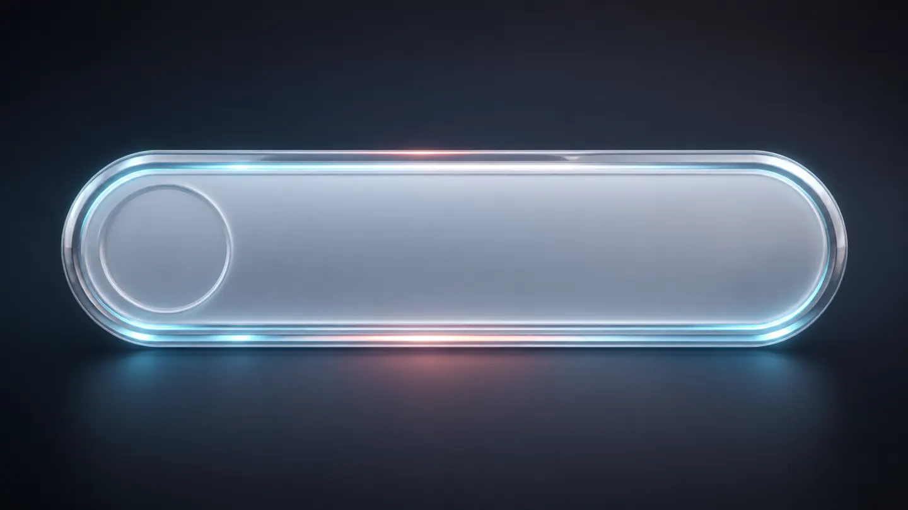
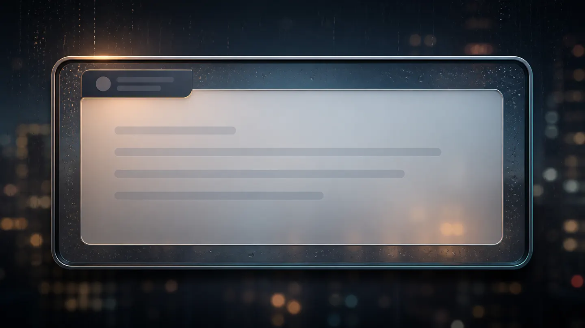
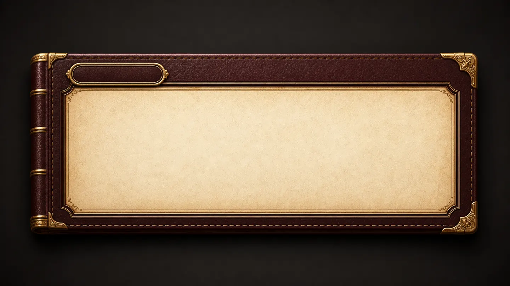
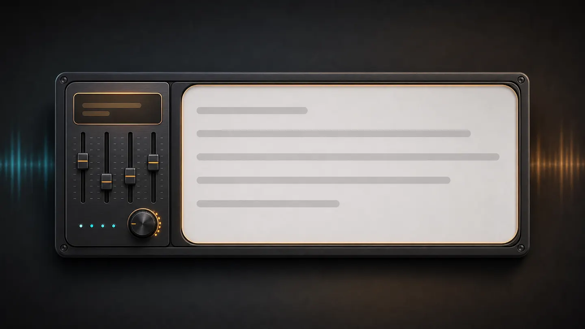
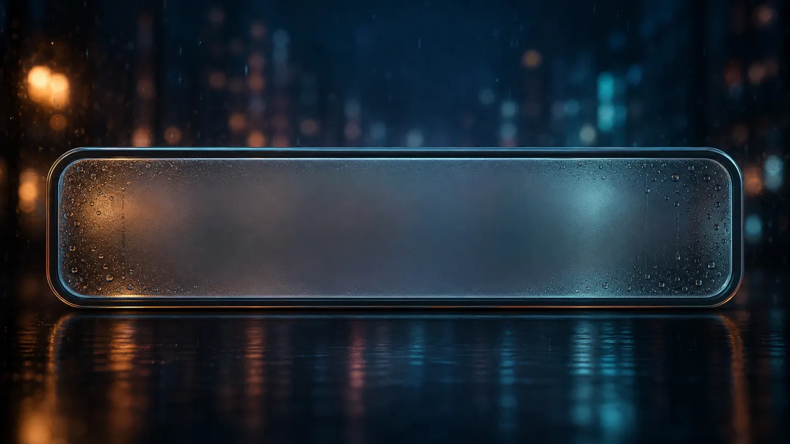
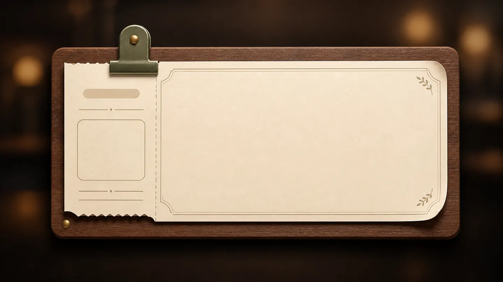

本命
01。今の明るいトップを自然に拡張できるッス。
Visual Pattern Lab
既存の選りすぐり素材をそのまま主役にして、同じブランドを5つの入口に分岐させた比較用プレビューッス。
白背景に青い回路面を敷いて、検証・実装・公開の流れを透明な作業卓として見せる案ッス。今の明るい方向性に一番近く、堅い信頼感も出しやすいッス。


金色の回路素材を使って、成果物や公開実績を少し華やかに見せる案ッス。AIを魔法っぽくせず、技術の実りとして見せる方向ッスね。

鳥居と狐ロゴを前面に出して、しきがみらしさを一番強く打ち出す案ッス。技術サイトだけど、入口の記号性はかなり強いッス。

操作盤・ログ・調整卓の素材で、AI運用者っぽさを出す案ッス。相談窓口というより、実験室や管制席の印象が強いッス。


書簡・巻物・クリップボードの素材で、依頼内容を読み解いて設計図へ落とす案ッス。技術よりも「相談しやすさ」と「整理力」を先に見せる方向ッス。

Selection Notes
01。今の明るいトップを自然に拡張できるッス。
02。公開実績や制作物を強く見せたい時に向くッス。
03。名前の記憶点を作るには一番強いッス。
04。エージェント運用や検証の硬派な印象に寄せられるッス。
05。依頼前の要件整理ページとして使いやすいッス。